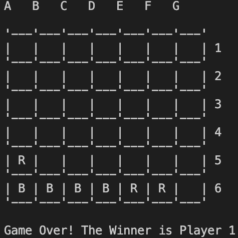
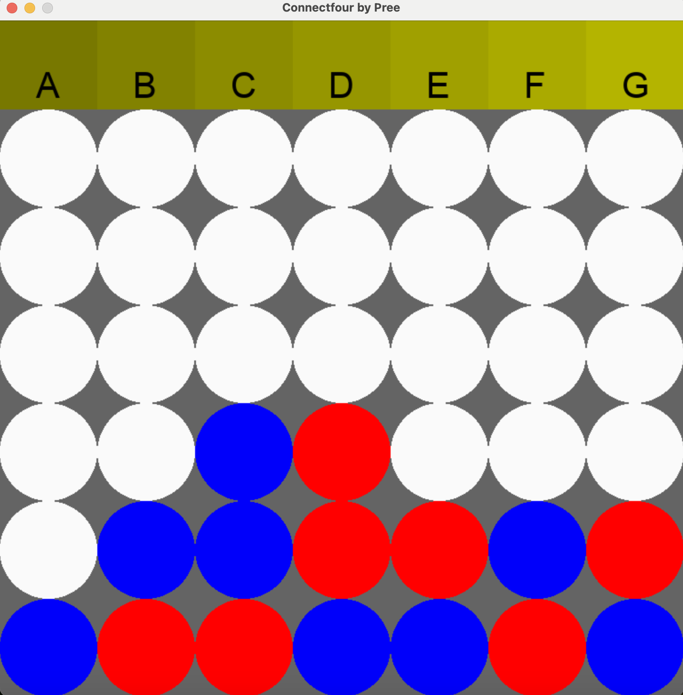

ConnectFour Game
Fall 2022
ConnectFour Game was one of my earliest programming projects and a first hands-on experience with building a full software application.
The project was developed in Python with both console-based and GUI versions, helping me learn game logic, user interaction, and software iteration.
It marks an important starting point in my software journey and shows the foundation of my interest in programming.
My responsibilities

ConnectFour game screen

GUI version of the ConnectFour game